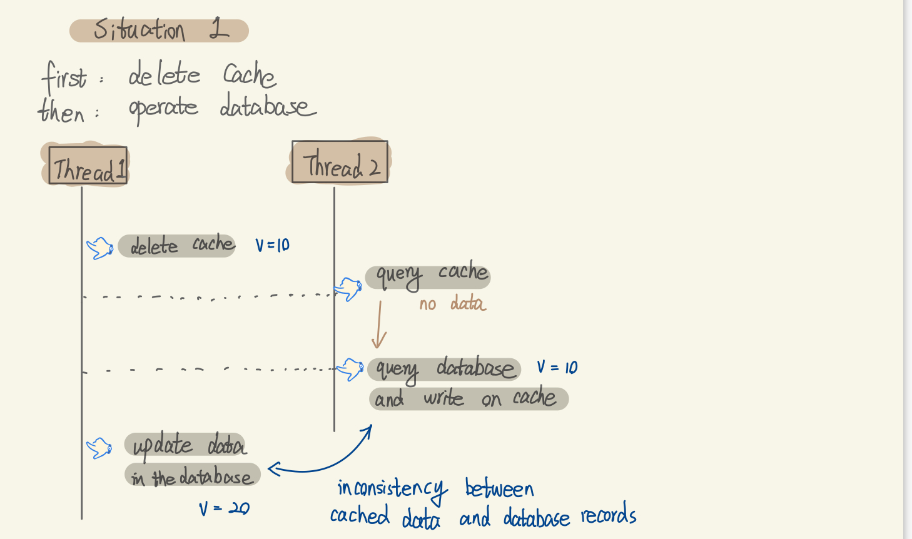
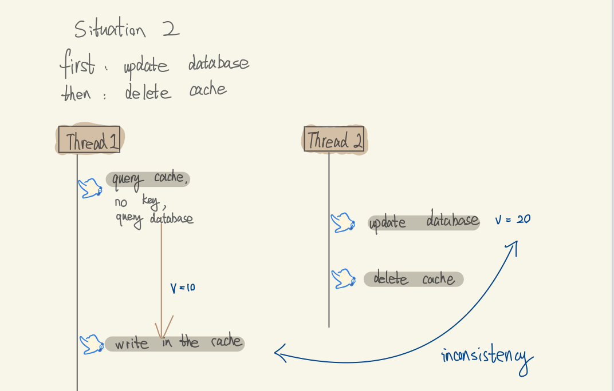
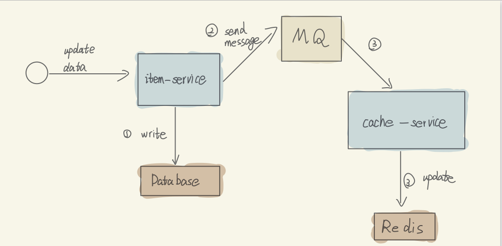
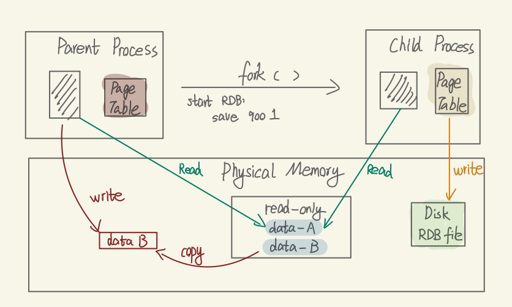
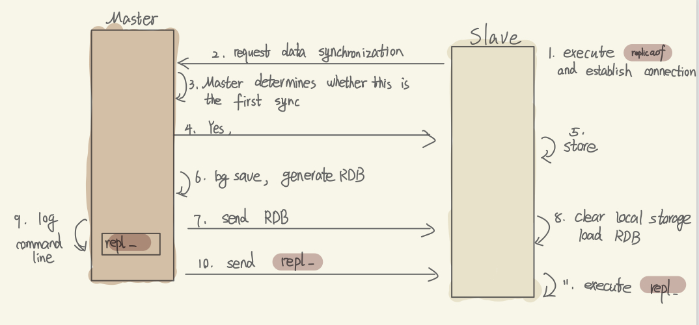
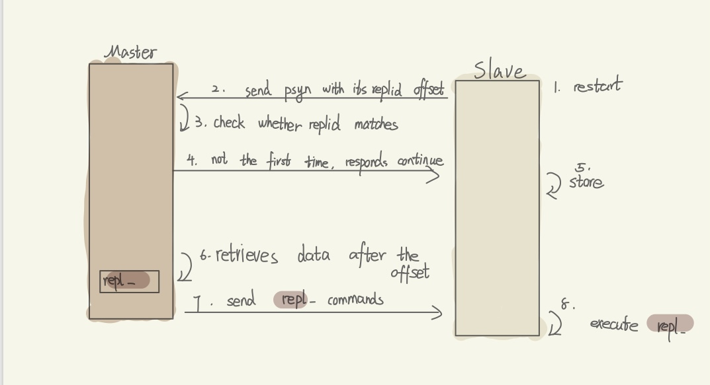
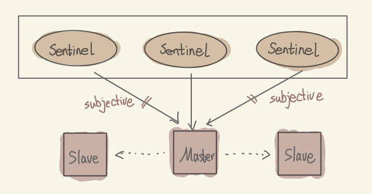
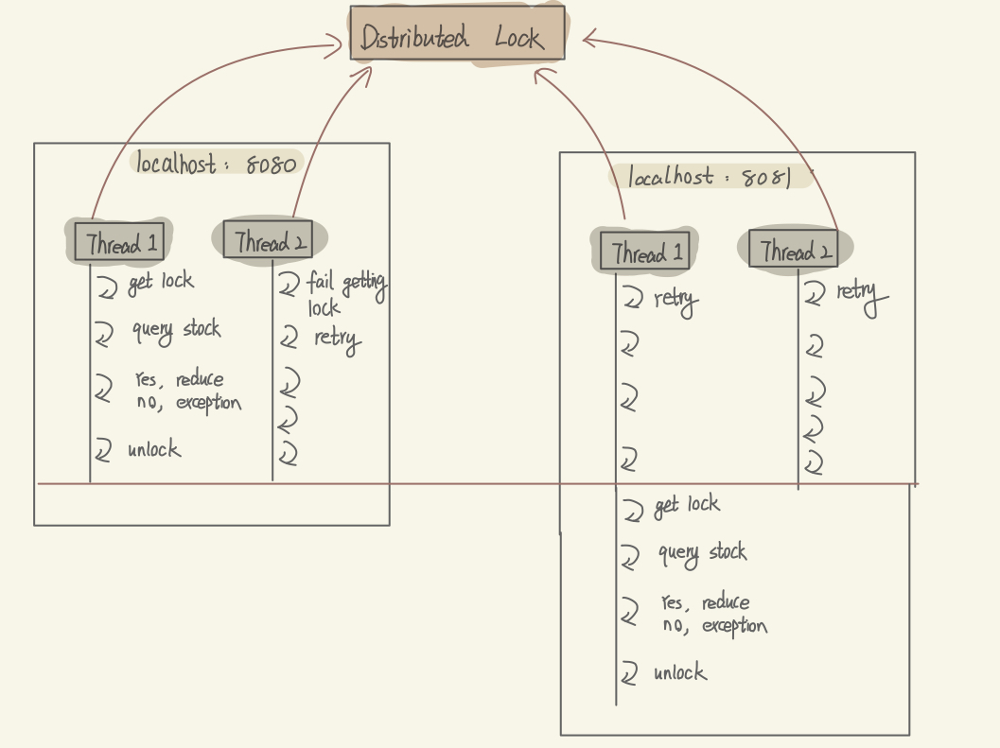
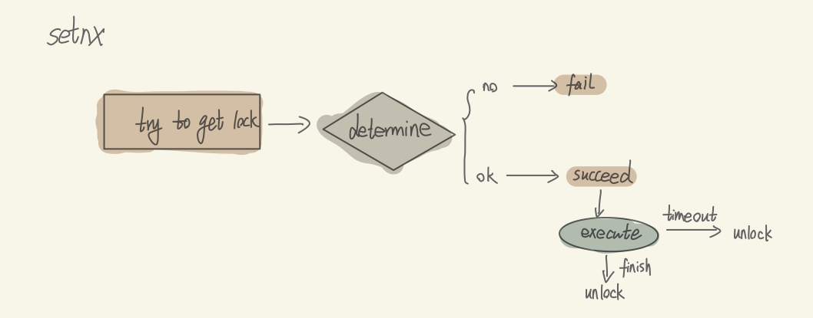
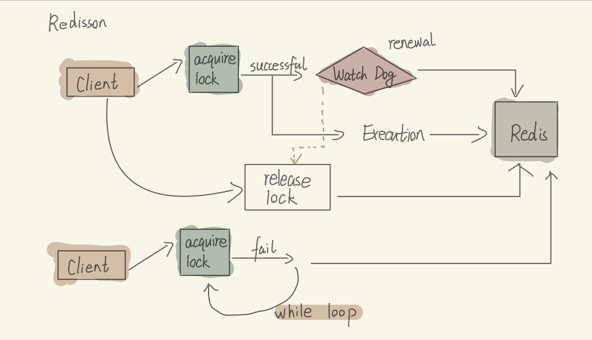

Defination: when the key expired, simultaneously many users query the corresponding data and make database breakdown.
Solutions:
Mutex Lock:When one thread want the expired data, then this thread will get the lock first, when it finds the data expired, it will try to query database and reset the expire time,
during this time, the other thread who also wants to get the expired data but fails, and it will sleep for a while and try again later.
use Logic Expire :
When the thread asks for an expired data,the thread will firstly return the expired data and the start a new thread to query the database, reconstruct the cache and reset logic expire.
Cache Avalanche
Defination: many keys expire at the same time, lead to many times visitings to DB, making DB breakdown.
Solutions:
Mutex Lock:When one thread want the expired data, then this thread will get the lock first, when it finds the data expired, it will try to query database and reset the expire time,
during this time, the other thread who also wants to get the expired data but fails, and it will sleep for a while and try again later.
use Logic Expire :
When the thread asks for an expired data,the thread will firstly return the expired data and the start a new thread to query the database, reconstruct the cache and reset logic expire.
Write-Through/Write-Back Consistency
Defination: when update a data record that simultaneously in the database and int the Redis, how to avoid making the data dirty.


Solutions:
Delayed Double Deletion Strategy:
Delete the cache immediately after updating the database.
Wait for a short delay (e.g., 500ms to 1s).
Delete the cache again to ensure consistency.
use RabbitMQ :

Data Persistence
Defination: By default, Redis stores all data in memory, which makes it extremely fast — but also means it is not persistent unless you configure it to be.
🔥 When Redis might lose data:
System Crash or Power Failure
Since Redis keeps data in RAM, if the server crashes or there’s a power outage, all in-memory data is lost unless it has been saved to disk.
Solutions:
RDB (Redis Database Snapshot):write all the data in Redis to the disk, when the Redis restart,
it can quicly read the snapshot from the disk. Good for backups and faster restarts, but may lose data written after the last snapshot.

use AOF (Append Only File) :
Logs every write operation in sequence.
Can recover data more accurately, but the file grows larger and recovery is slower.
set num 123
set name jack
set num 666
➡️
mset name jack num 666
AOF Configuration
AOF is disabled by default and requires configuration changes in redis.conf:
# Enable AOF functionality (default is "no")
appendonly yes
# Set the AOF filename
appendfilename "appendonly.aof"
Command Synchronization Frequency Options
Redis provides three options for how often it syncs commands to the AOF file:
# Write and sync after each command
appendfsync always
# Write after each command, sync once per second (recommended)
appendfsync everysec
# Let the operating system handle sync timing
appendfsync no
Configuration
Sync Mechanism
Advantages
Disadvantages
always
Synchronize after every command
Highest data safety, minimal data loss risk
Significant performance impact
everysec
Synchronize once per second
Balanced performance
Might lose up to 1 second of data
no
Operating system controlled
Best performance
Higher risk of data loss, unreliable durability
Automatic Rewriting
Redis can automatically rewrite the AOF file when it grows too large:
# Trigger rewrite when AOF file grows by 100%
auto-aof-rewrite-percentage 100
# Minimum size before auto-rewrite is triggered
auto-aof-rewrite-min-size 64mb
Redis Memory Eviction Strategies
When Redis runs out of memory, it uses eviction policies to remove existing data when new keys are added. This document explains the different eviction strategies available in Redis and provides recommendations for their use.
# The default eviction policy
maxmemory-policy noeviction
Available Eviction Policies
Policy
Target Keys
Algorithm
Description
noeviction
None
N/A
Don't evict any keys, but return an error when memory is full and new data cannot be added. This is the default policy.
volatile-ttl
Keys with TTL
TTL-based
Evict keys with TTL settings, prioritizing keys with shorter TTL values.
allkeys-random
All keys
Random
Randomly select keys from the entire keyspace for eviction.
volatile-random
Keys with TTL
Random
Randomly select keys with TTL settings for eviction.
allkeys-lru
All keys
LRU
Evict least recently used keys from the entire keyspace.
LRU (Least Recently Used): Prioritizes eviction of keys that haven't been accessed recently. The more recently a key was accessed, the less likely it is to be evicted.
volatile-lru
Keys with TTL
LRU
Evict least recently used keys, but only among keys with TTL settings.
allkeys-lfu
All keys
LFU
Evict least frequently used keys from the entire keyspace.
LFU (Least Frequently Used): Counts the access frequency of each key. Keys with lower access frequency are more likely to be evicted.
volatile-lfu
Keys with TTL
LFU
Evict least frequently used keys, but only among keys with TTL settings.
Prefer allkeys-lru strategy to fully utilize the advantages of the LRU algorithm, keeping the most recently accessed data in memory. Recommended when your application has clearly defined hot/cold data patterns.
Use allkeys-random when data access patterns don't vary much and there's no obvious hot/cold data division.
Consider volatile-lru strategy when some data needs persistence. Keys without TTL settings will never be evicted, while others will be managed by LRU.
For data with high access frequency in short time periods, consider using allkeys-lfu or volatile-lfu strategies.
Expiration Policy
1. Lazy Eviction
Redis doesn't actively monitor key expiration. Instead, it checks if a key has expired when it's accessed, and if so, removes it; otherwise, it returns the key.
Advantages
CPU-friendly: only performs expiration checks when accessing a key
No wasted time checking rarely used keys
Disadvantages
Not memory-efficient
Expired but unused keys will remain in memory indefinitely, never releasing memory
2. Periodic Eviction
At regular intervals, Redis examines a sample of keys, identifies and removes those that have expired (taking a random sample of keys from the database and checking for expired keys within that sample).
Two periodic cleaning modes:
SLOW mode: Time-based task with default frequency of 10Hz. Each iteration takes no more than 25ms. The frequency can be adjusted using the "hz" option in redis.conf.
FAST mode: Variable frequency, but intervals are not less than 2ms. Each cycle takes no more than 1ms.
Advantages
Can limit the duration and frequency of cleanup operations to reduce CPU impact
Effectively releases memory used by expired keys
Disadvantages
Difficult to precisely control the timing and frequency of cleanup operations
Cluster
Why
Memory limitation:
A single Redis instance can’t hold massive datasets — Redis Cluster splits data across nodes.
High availability:
If one node fails, replicas take over automatically — no single point of failure.
Scalability:
Redis Cluster allows you to handle more concurrent requests by distributing the load.
Automatic sharding:
Redis Cluster manages data partitioning and rebalancing across nodes automatically.
Key Terminology
Replication ID: A unique identifier for a dataset. Each master has a unique replid, and slaves inherit the master's replid.
offset: Position indicator showing how far the data in repl_baklog has grown. When a slave completes synchronization, it records the previous synchronization offset. If the slave's offset is smaller than the master's offset, it means the slave data is behind the master and needs to be updated.
repl_baklog: A log maintained by the master that records all write commands.
RDB: Redis Database file, used for data persistence and replication.

Full Synchronization Process

Incremental Synchronization Process (Slave restart or periodic data changes):
Service Status Monitoring
Sentinel monitors service status based on heartbeat mechanism, sending ping commands to each instance every second:
Subjective down: If a sentinel node discovers an instance doesn't respond within the specified time, it considers that instance to be subjectively down.
Objective down: If more than the specified number (quorum) of sentinels believe an instance is subjectively down, then that instance is considered to be objectively down. The ideal quorum value should exceed half of the total number of Sentinel instances.
Failover Selection Rules

Sentinel Mode
First, evaluate the disconnection time from the master node. If it exceeds the specified value, that slave node should be selected.
Then, evaluate the slave-priority value of the slave node. The lower the value, the higher the priority.
If slave-priority values are the same, evaluate the offset value of the slave node. The larger the value, the higher the priority.
Finally, evaluate the run ID of the slave node. The smaller the value, the higher the priority.
Redis Split-Brain Problem
Split-brain is a critical issue that can occur in Redis cluster deployments:
It happens when master and slave nodes end up in different network partitions
This network division prevents Sentinel nodes from detecting the original master node
The election process automatically promotes a slave node to become a new master
The result is two concurrent master nodes operating independently
Clients may write data to both masters, causing data inconsistency across the cluster
When the network eventually recovers, the Sentinel will demote the original master to slave status
The synchronization process will overwrite data on the demoted master with data from the new master
This leads to permanent data loss for any writes that occurred during the split-brain condition
Solution to Split-Brain
The split-brain problem can be mitigated by modifying Redis configuration:
Set minimum slave requirements: Configure a minimum number of connected slave nodes required for a master to accept writes
Reduce synchronization timeout: Shorten the master-slave data synchronization timeout period
These configurations prevent data writing when minimum requirements aren't met
While this may temporarily reduce availability, it helps avoid significant data loss scenarios
Redis Sharding Cluster Overview
Purpose of Redis Sharding Clusters
The cluster contains multiple master nodes, with each master storing different data segments
Each master can have multiple slave nodes for redundancy and read scaling
Health status between masters is continuously monitored through ping mechanisms
Client requests can be directed to any cluster node, and will be automatically redirected to the correct node that holds the requested data
How Redis Sharding Cluster Stores and Retrieves Data
Redis sharding cluster uses the concept of hash slots for data distribution
A Redis cluster defines exactly 16384 hash slots
These 16384 slots are distributed among different Redis instances
For data storage and retrieval, Redis calculates a hash value based on the key's effective part:
If the key contains a hash tag (content between {} symbols), the hash tag is used as the effective part
If there's no hash tag, the entire key is used as the effective part
The remainder after dividing the hash value by 16384 determines which slot (and therefore which node) will store the data
This consistent hashing approach allows the cluster to scale horizontally while maintaining efficient data access
Distributed Lock
A distributed lock is used to ensure mutual exclusion when multiple processes or services try to access shared resources (like inventory, orders, etc.) in a distributed system.

Distributed Lock
SET lock_key lock_value NX EX 10

Setnx

Redisson
Reentrant lock support: allows the same thread to acquire the same lock multiple times
Single Thread but Fast--IO Multiplexing
Redis uses cache to store and retrieve data, which is very fast, the only thing that will get in its way is the network.
I/O multiplexing refers to the technique of using a single thread to monitor multiple I/O events (such as network connections) simultaneously, without the need to create a dedicated thread for each connection. This allows Redis to handle thousands of client connections with minimal system resources.
Redis's I/O multiplexing achieves the following:
Single-threaded monitoring of multiple sockets: Redis primarily uses a single thread to listen for events on multiple client sockets via system calls like select, poll, epoll (Linux), and kqueue (BSD/macOS).
Event-driven architecture: When data is ready to be read, written, or when a new connection arrives, the operating system notifies Redis, which then handles the corresponding event—rather than continuously polling each connection.
Non-blocking I/O: Redis uses non-blocking sockets, which means that if an operation cannot be completed immediately (e.g., no data is available to read), it will return immediately instead of blocking the thread. This allows Redis to continue handling other connections.
Event-based scheduling: When an event occurs (e.g., a client sends a command), Redis places the event into a queue and processes it one by one. This includes: